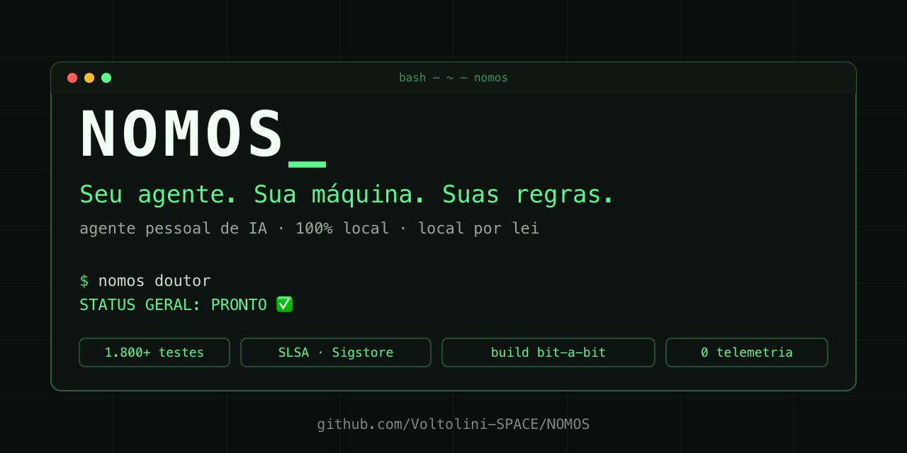
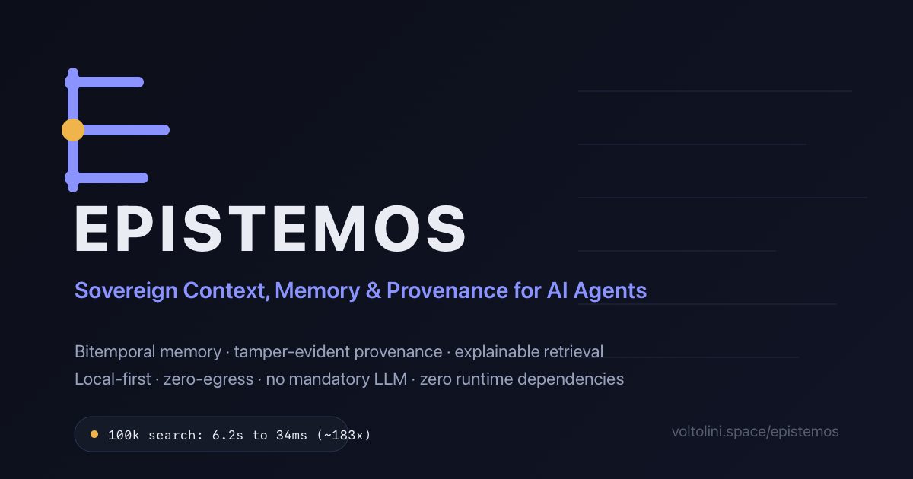

Aprender, ensinar e colaborar com IA.
A IA já faz parte do dia a dia, mas ainda intimida muita gente. voltolini.space nasce pra mudar isso. Aqui você aprende como a IA funciona, vê como eu aplico e leva ferramentas prontas pra usar.
O que este lugar é. E o que não é.
Hype. Aqui ninguém promete mágica nem futuro de palco.
Caixa preta. Você entende o porquê antes de usar o como.
Curso genérico. Cada peça nasce de algo que eu construí e testei.
Um hub onde a IA é parceira de aprendizado. Você aprende rápido. E aplica no mesmo dia.
Um caminho claro pra começar
aprender
Descubra como a IA funciona, na prática e sem rodeio. Os conceitos explicados de forma simples.
ensinar
O caminho explicado sem rodeio, em documentação aberta e no código que você pode ler. Os ebooks e manuais estão em produção.
colaborar
Ferramentas que trabalham junto com você. Construídas, testadas e entregues prontas pra usar.
O que está no forno
Sem data inflada. Cada peça sai quando estiver pronta de verdade.
IA sem intimidação
O ponto de partida. O que a IA faz bem, o que faz mal e como usar sem medo.
Primeiro agente local
Um guia curto pra rodar seu primeiro modelo na sua máquina, do zero ao primeiro resultado.
voltolini · assistente
Um assistente com a mesma marca: campo claro, resposta num card, sem mistério.
NOMOS. Seu agente. Sua máquina. Suas regras.
Um agente pessoal de IA que roda 100% no seu computador. Local por lei.
- Por padrão, nada sai da sua máquina.
- Toda ação sensível pede a sua licença.
- Toda release publica hash. As recentes trazem também proveniência SLSA e SBOM.
- Mais de 0 testes automatizados. CI verde em 3 sistemas.
- Orquestração governada: cada passo de uma missão passa pela mesma escada de risco antes de rodar.

EPISTEMOS. Transforme informação em conhecimento auditável.
Um motor soberano, e um painel operacional, para contexto, memória, proveniência, alegações e linhagem de decisão. Local por padrão, sem LLM obrigatório.
- Painel ao vivo: veja o conhecimento, e como ele é autorizado.
- Memória bitemporal: o que era verdade e quando você soube.
- Cada fato guarda a sua origem. Toda resposta explica de onde veio.
- Alegação, evidência, revisão e decisão, mantidas distintas. A crença é derivada.
- Zero dependência em runtime. Só a biblioteca padrão do Python.
- Busca explicável até 0x mais rápida em escala.

Onde eu construo todos os dias
Cada frente com a sua marca e no seu estágio real. O que já opera aparece como opera, o que está em construção aparece como construção. O que aprendo neles vira conteúdo aqui.
podpagar
Negócios digitais com cobrança embutida desde o primeiro deploy. Ainda não está em operação: o caminho Integrar está em construção, Publicar e Criar vêm depois. A própria página do produto mostra o roadmap sem inflar data.
podpagar.com.br ecossistemaCONFRAPAG
O maior ecossistema de pagamentos do Brasil. É onde eu sou pilar e opero no dia a dia.
confrapag.com.br fintechSE7EN PAY
Pagamentos com prova no dia a dia. A fintech que eu toco de perto.
se7enpay.com.br